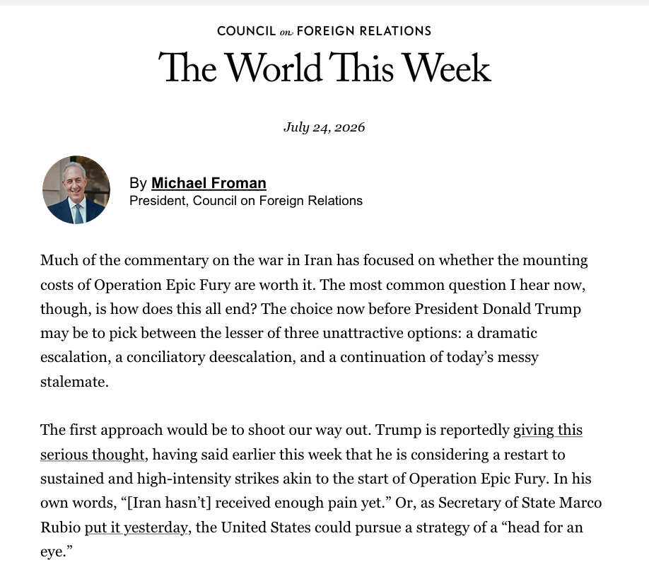
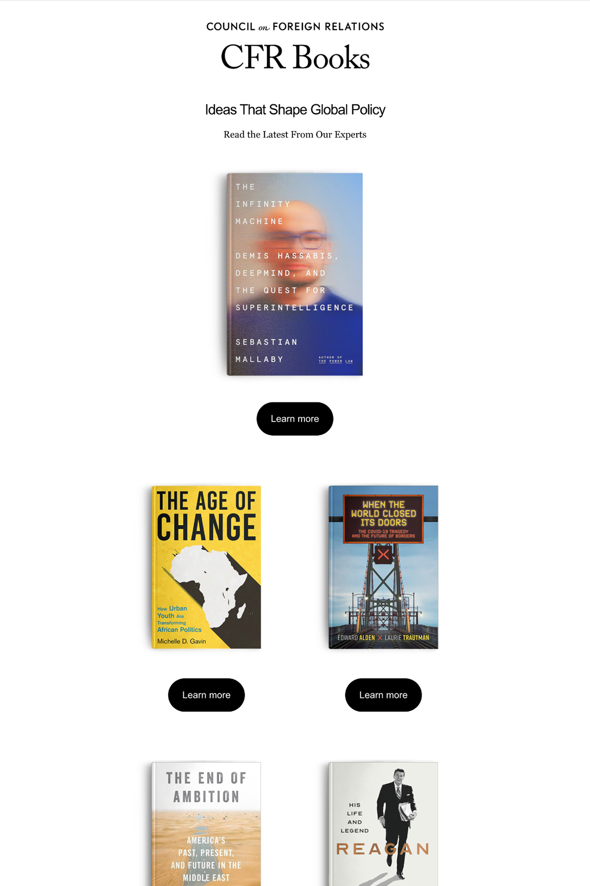
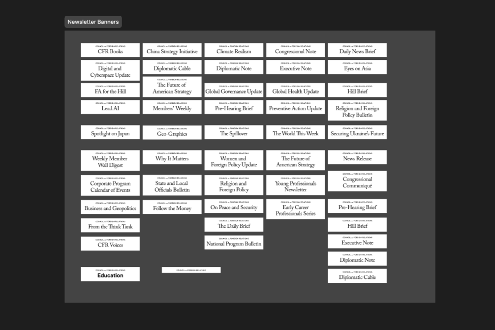
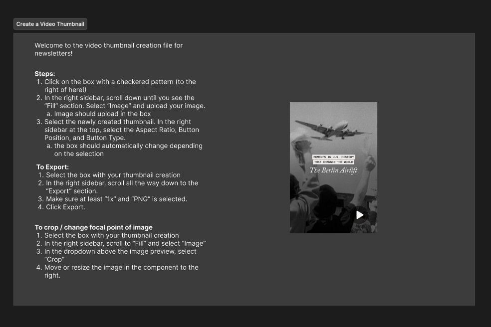
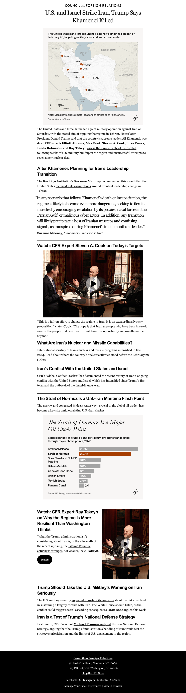

Newsletter Brand Overhaul
Project Overview
Following CFR's rebrand, the email/newsletter space was named a top priority. The Council runs 40+ newsletters, some of which hadn't been redesigned in nearly a decade. I led the effort to bring CFR's newsletter ecosystem in line with the new brand: designing a unified banner system that could flex across every newsletter type, then building out a full set of templates in Sailthru with consistent typography, spacing, and componentry.
As sole designer, led the effort to bring CFR’s 40+ newsletters in line with the org-wide rebrand — a unified banner system and a full set of Sailthru templates with consistent typography, spacing, and componentry.
- Newsletters were inconsistent in look and feel and disconnected from the new CFR brand
- Six distinct newsletter formats, each with different content needs and production timelines
- No shared system made building newsletters slow and error-prone, especially under breaking-news time pressure
- Designed a unified banner system across all six newsletter types
- Built a dedicated Sailthru template for each newsletter type
- Standardized font styles, padding, and margins into one cohesive system
- Introduced new modular components, including a vertical video component
All 40+ newsletters, across all six formats, now run on the new design system — giving editorial a reusable component set to build newsletters faster and more consistently.
Designs & Components




Dive Deeper
The Challenge
CFR’s newsletters aren’t one-size-fits-all — editorial produces several distinct newsletter styles, each with different content needs, production timelines, and reader expectations.
| Newsletter type | Design considerations |
|---|---|
| Magazine | Needs strong image real estate, less dense text blocks |
| Text-heavy | Dense text, minimal visuals. legibility and hierarchy matter most |
| Hybrid | Needs to flex between visual and text-dense sections without feeling inconsistent |
| Alerts | Must be buildable fast, but still detailed and structured to feature expert voices under time pressure |
| Promo | Built for a single clear call-to-action |
| Book | Needs strong cover image treatment |
The core design challenge: create a banner and template system flexible enough to serve all six formats without sacrificing the visual identity each one needs while ensuring editorial could still build them quickly and consistently in Sailthru.
Process & Design Work
- Unified banner design: Designed a single newsletter banner/header system that works across all six newsletter types and reinforces the new CFR brand identity.
- Sailthru templates: Created a dedicated template for each newsletter type in Sailthru. Standardized font styles, padding, and margins across every template so they all had the same visual language.
- New component development: With a shift from editorial and video to push more short form content, I created a new vertical video component and system for editors to create video thumbnails.
Outcome & Results
- Full migration completed: All 40+ CFR newsletters now run on the new, consistent design system.
- Reusable component system: Editorial can now build newsletters faster and more consistently, thanks to standardized components, spacing, and a new vertical video module.
- Engagement metrics: TWTW saw a subscriber increase of about 12% after launch. This newsletter was the first to utilize the new templates.
